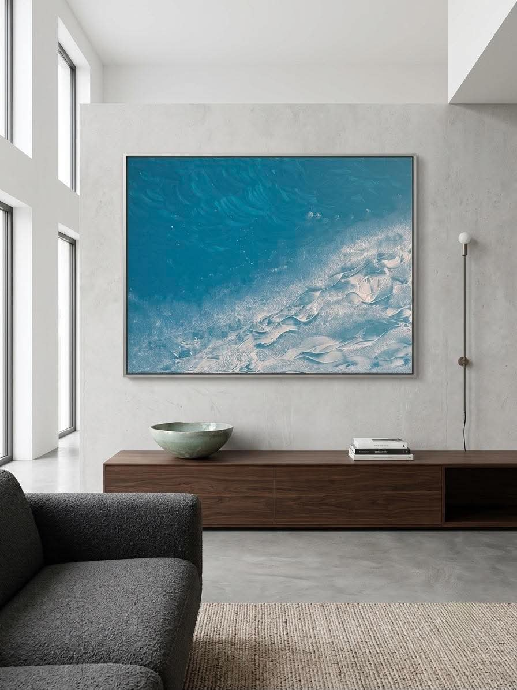
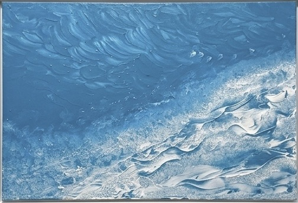
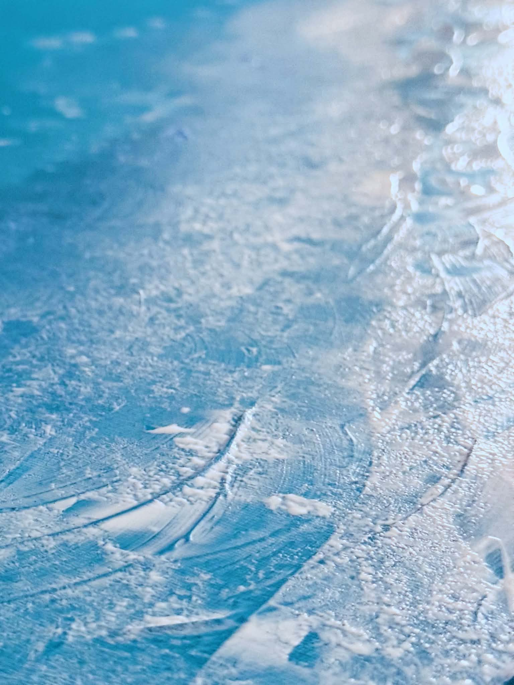

Work I
The Ocean
Original painting on canvas · [MEDIUM] · [YEAR] · [DIMENSIONS] · framed · available, by private inquiry
Teal water breaking into thick white surf, built in heavy impasto.
A high, aerial view of water caught at the moment the surf turns. Deep teal sweeps across the upper canvas in long, curving strokes, then breaks along a diagonal into a wide band of white impasto built up so thickly the foam stands off the surface in ridges. Flecks of white scatter across the blue like light on a moving sea; close up, the paint reads as much like weather and sand as like brushwork.

